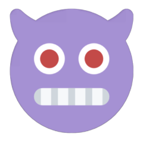

About this project
SeekDeep
A local-first Discord assistant. Llama, Qwen-VL, SDXL and SearXNG run on your own hardware; this project is the GUI sitting on top of the bot and its FastAPI side-car.
RuntimeNode 20 · Python 3.11
ModelsLlama · Qwen-VL · SDXL
SearchSearXNG (self-hosted)
TelemetryNone
Primary surfaces
03 · the ones people actually live in
01
Control Center
Launcher, GPU/VRAM monitor, model manager, config editor, log tail, archive browser.
Operator
app.html →
02
Chat
Conversation client with servers, threads, attachments, persona overrides. PWA-installable.
Client
chat.html →
03
Installer
Nine-step wizard — system checks, model picker, VRAM calculator. Emits a populated .env.
Setup
installer.html →
Working surfaces
09 · day-to-day tooling
04
Docs
Filterable view of COMMANDS.md — slash, mention, context-menu, reaction commands.
·
docs.html →
05
API explorer
Request builder for /health, /gpu, /chat, /image, /vision, /route/debug, plus offline mocks.
·
api.html →
06
Architecture
Interactive map — Discord gateway, route dispatchers, agents, FastAPI side-car, persistence, SearXNG.
·
architecture.html →
07
Roadmap
Live view of PLANNED.md — shipped, in-flight, parked, out-of-scope.
·
roadmap.html →
08
Changelog
Versioned timeline from v10.1 onward, tagged feat / fix / perf / docs.
·
changelog.html →
09
Memory
Per-user fact store — review, edit, export, clear. 25-fact / 500-char caps; backend live.
Live
memory.html →
10
Image A/B
Same prompt + seed across /image, /img2img, /instruct-pix2pix, /inpaint.
·
image-ab.html →
11
Prompt marketplace
Local templates + share-to-#prompts embed. Discord is the storage — server-scoped, no cloud.
Live
prompts.html →
12
TTS preview
VC picker, Piper voice list, queue mockup. Backend deferred — this is the integration target.
Mock
tts.html →
Reference & marketing
05 · external surfaces
13
Landing
External-facing overview of the project.
·
landing.html →
14
Pitch deck
Nine slides at 1920×1080, scaled to fit. ← / → to navigate.
·
pitch.html →
15
Tour
Seven-step guided overlay with spotlight and keyboard navigation.
·
tour.html →
16
Mobile mocks
Hub, Chat, Control Center at 375×812. Chat is a real PWA.
·
mobile.html →
17
Boot animation
Fourteen-step boot log with logo materialization.
·
boot.html →
Affiliates
01 · projects we vouch for
"Your Server. Unleashed."
A hosted Discord bot focused on rapid server moderation + utility — if local-first isn't your thing and you want plug-and-play with a hosted backend, this is what we'd point you at first.